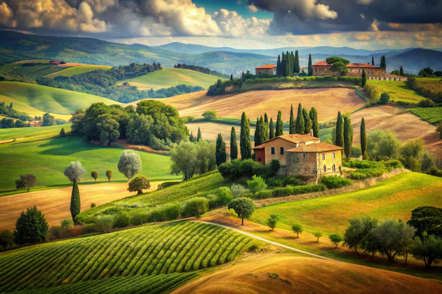

Bem-vinda à Itália
Imagine-se caminhando por charmosas vilas italianas, cercadas por montanhas e vinhedos, enquanto o sol se põe no horizonte.
Imagine-se caminhando por charmosas vilas italianas, onde o tempo parece desacelerar para acompanhar o ritmo sereno da vida local. Sinta o calor suave do sol acariciando sua pele, aquecendo-a delicadamente, como um abraço reconfortante de um velho amigo. A cada passo, o chão de pedras irregulares sob seus pés emite um leve crepitar, conectando você às raízes antigas desse lugar encantado.
A brisa fresca do final da tarde desliza pelo seu rosto, trazendo consigo o aroma adocicado das vinhas próximas e o sutil perfume das flores selvagens que adornam as encostas. O vento brinca suavemente com seus cabelos, provocando um arrepio gostoso que percorre sua nuca, contrastando com o calor morno que emana do sol poente.
Os sons ao seu redor são de uma harmonia natural: o canto distante dos pássaros que se recolhem para a noite, o farfalhar das folhas ao serem tocadas pelo vento e o murmúrio quase imperceptível de um riacho próximo, que dança entre as pedras como uma melodia suave e constante.
Conforme o sol se aproxima do horizonte, sua luz dourada banha as colinas e vinhedos em tons quentes de âmbar e laranja, pintando o céu com um espetáculo de cores que só a natureza pode proporcionar. Você sente o calor em suas bochechas, como se o sol estivesse compartilhando um segredo, aquecendo sua alma e trazendo uma sensação de plenitude.
A paisagem ao seu redor parece viva, pulsando com uma energia tranquila e acolhedora, enquanto você respira fundo, inalando o ar puro e fresco, carregado de história e beleza. O cenário é tão perfeito que parece um sonho, mas a sensação é real — uma conexão profunda com o mundo ao seu redor, com a natureza, com a própria essência da vida.